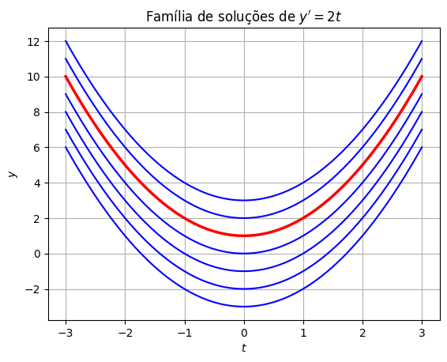

O que são equações diferenciais?#
Ao longo da sua vida escolar, você resolveu inúmeras equações. Numa equação como
a incógnita \(x\) é um número: queremos descobrir qual valor (ou valores) de \(x\) tornam a igualdade verdadeira. Aqui, \(x=2\) e \(x=3\) resolvem a equação.
Uma equação diferencial é um tipo diferente de equação. Nela, a incógnita não é mais um número: é uma função. Queremos encontrar uma função \(y(t)\) que satisfaça uma equação envolvendo ela mesma e suas derivadas \(y', y'', \dots\) Por exemplo,
é uma equação diferencial: buscamos uma função \(y(t)\) cuja derivada seja, em todo instante, igual ao dobro do valor da própria função.
De modo geral, uma equação diferencial ordinária (EDO) é uma equação da forma
relacionando a variável independente \(t\), a função desconhecida \(y(t)\) e suas derivadas. (O nome ordinária indica que \(y\) depende de uma única variável \(t\); quando a incógnita depende de várias variáveis — como posição e tempo — obtemos uma equação diferencial parcial, com derivadas parciais. Veremos exemplos grandiosos na próxima aula.)
Você já resolveu equações diferenciais (sem saber)#
Boa notícia: você já tem experiência com equações diferenciais desde o Cálculo 1! Toda vez que você calculou uma integral indefinida, você resolveu a equação diferencial mais simples que existe:
Encontrar uma primitiva de \(f(t)\) é resolver essa ED — a «incógnita» \(y(t)\) é justamente a família de primitivas de \(f\).
Exemplo 1. Resolva \(y' = 2t\).
Basta integrar os dois lados em relação a \(t\):
onde \(C\) é uma constante arbitrária — a constante de integração. Ou seja, a equação \(y'=2t\) não tem uma única solução, mas uma família de soluções, uma para cada valor de \(C\):
import numpy as np
import matplotlib.pyplot as plt
t = np.linspace(-3, 3, 200)
for C in range(-3, 4):
plt.plot(t, t**2 + C, 'b')
plt.plot(t, t**2 + 1, 'r', linewidth=2.5) # solução particular com y(0)=1
plt.title(r"Família de soluções de $y' = 2t$")
plt.xlabel("$t$"); plt.ylabel("$y$")
plt.grid(True)
plt.show()

Cada valor de \(C\) desloca a parábola verticalmente, mas todas têm a mesma inclinação em cada instante \(t\) — afinal, todas satisfazem \(y'=2t\). Se, além da equação, soubermos o valor de \(y\) em algum ponto — por exemplo, \(y(0) = 1\) (curva vermelha) — conseguimos determinar \(C\) e isolar uma única solução. Esse tipo de problema, uma ED acompanhada de uma condição extra, é chamado de problema de valor inicial (PVI), e vamos encontrá-lo o tempo todo neste curso.
Exemplo 2. Resolva \(y'' = 6t\).
Agora a incógnita aparece na segunda derivada. Integramos duas vezes:
Note que, dessa vez, surgem duas constantes arbitrárias, \(C_1\) e \(C_2\) — uma para cada integração. Esse é um padrão geral: a solução geral de uma ED de ordem \(n\) costuma ter \(n\) constantes arbitrárias, e precisamos de \(n\) condições (por exemplo, \(y(t_0)\) e \(y'(t_0)\)) para determinar uma solução específica.
O que vem a seguir#
A seguir, vamos estudar a equação diferencial mais simples e mais importante de todas — tão importante que aparece em praticamente todo modelo de crescimento, decaimento e mudança: